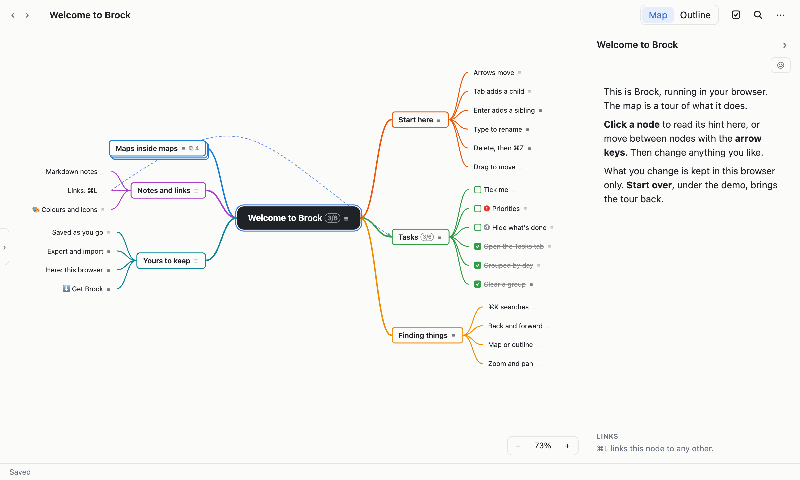

Mind maps inside mind maps.
Brock is a mind-mapping app for your desktop. Any node can become a map of its own, so one vault holds everything you're thinking about, from the big picture down to the smallest detail, and you're never more than a few keys from any of it.
Free, for Mac, Windows and Linux. Version {{VERSION}}.
Maps in maps
Turn any branch into a map of its own and open it, as deep as you like. The breadcrumbs always show the way back out.
Quick from the keyboard
Tab, Enter and the arrow keys build a map as fast as you can think. ⌘K finds any node in any map.
Tasks where they belong
Make any node a task with a priority. The Tasks panel gathers them from every map, and groups what you did by day.
Notes and links
Every node has notes in Markdown. Link nodes across maps, and see what links to each.
Saved as you go
There's no Save button. Every change is kept as you make it, a copy is made each day, and everything you delete waits in the trash.
Yours, on your computer
No account, no cloud, no internet needed. Your maps are in a database on your computer, and export to Markdown, OPML and JSON.
Try it here
This is the real app, running in your browser. The map is a tour of what it does: click a node and follow its hints. A few keys, such as ⌘T, belong to your browser here: use the buttons beside the map instead.

The demo needs a keyboard and a bigger screen: try it on a computer.
Download
Brock {{VERSION}}, free.
Opening it the first time
Brock isn't signed by Apple or Microsoft yet, so your computer asks before opening it the first time.
- Mac: open the .dmg and drag Brock to Applications. When macOS says it can't check the app, open System Settings › Privacy & Security and click Open Anyway.
- Windows: if SmartScreen stops the installer, click More info, then Run anyway.
- Linux: make the AppImage executable and run it, or install the .deb.